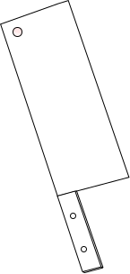

Panduan Potong Ayam
potongayam.com

Nak potong berapa?
4
Potongan ini sesuai untuk makanan western seperti Peri-peri chicken ataupun masakan arab seperti Nasi Mandi
8
Potongan ini dipakai oleh rangkaian restoran 'fast-food' seperti ayam goreng.
12
Potongan ini sesuai untuk masakan lauk keluarga saiz kecil (1-4 orang)
14
Potongan ini sesuai untuk masakan lauk keluarga saiz sederhana (3-6 orang)
16
Potongan ini sesuai untuk masakan lauk keluarga saiz besar (6+ orang)
24
Potongan ini sesuai untuk semua jenis makanan dan apa jua saiz keluarga.
atau
cari bahagian ayam
Kongsi laman ini:
Laman ini dibina oleh
Khairul Haaziq
. 12:57 AM 15/6/2022 dari Kuala Lumpur.